Motivation
Functional principal component analysis (FPCA) is a powerful technique for understanding variation in functional data. However, standard FPCA conflates two distinct sources of variation:
- Amplitude variability: differences in the values or shape of functions
- Phase variability: differences in the timing or alignment of features
Elastic FPCA addresses this by first aligning curves using elastic alignment (via the SRVF framework), then performing FPCA on the aligned curves and warping functions separately.
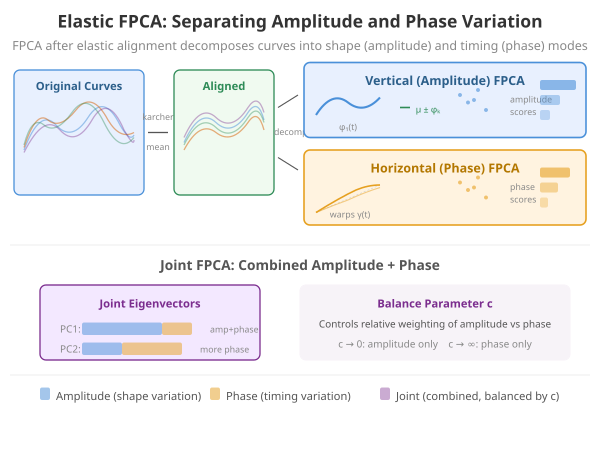
Mathematical Framework
The SRVF Representation
Given a function , its square-root velocity function (SRVF) is
The key property of the SRVF is that the Fisher-Rao metric between two functions reduces to the distance between their SRVFs after optimal alignment:
where is the group of orientation-preserving diffeomorphisms .
Karcher Mean
The Karcher mean of a sample is the Fr0e9chet mean under the Fisher-Rao metric:
The algorithm alternates between (1) aligning each curve to the current mean and (2) computing a new mean from the aligned curves.
Three Modes of FPCA
After computing the Karcher mean, we obtain aligned curves and warping functions . These are analyzed with three variants of FPCA:
Vertical (amplitude) FPCA: PCA on the aligned SRVFs , capturing pure shape variation. The covariance operator is
Horizontal (phase) FPCA: PCA on the shooting vectors in the tangent space at the identity warp, capturing pure timing variation.
Joint FPCA: Concatenates amplitude and phase representations into a combined vector and performs PCA, revealing mixed amplitude-phase modes of variation.
Simulated Data with Amplitude + Phase Variation
n <- 30
m <- 101
t <- seq(0, 1, length.out = m)
# Generate curves with amplitude + phase variation
X <- matrix(0, n, m)
for (i in 1:n) {
amp <- rnorm(1, 1, 0.3) # amplitude variation
shift <- rnorm(1, 0, 0.05) # phase variation (timing shift)
X[i, ] <- amp * sin(2 * pi * (t - shift)) +
0.3 * amp * cos(4 * pi * (t - shift))
}
fd <- fdata(X, argvals = t)
plot(fd, main = "Simulated Curves: Mixed Amplitude + Phase",
xlab = "t", ylab = "X(t)")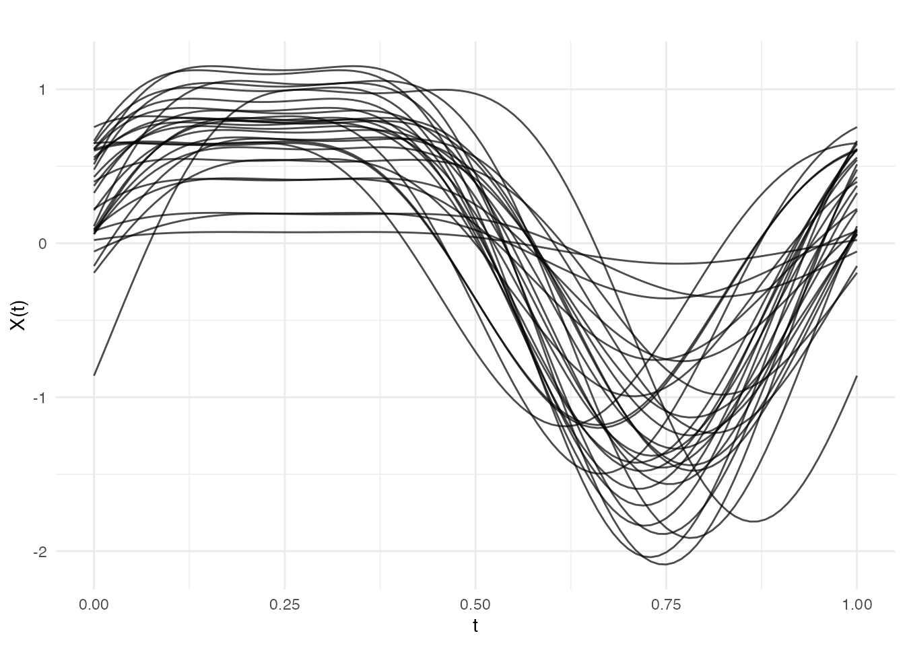
Elastic Alignment
Elastic FPCA begins by aligning curves with
karcher.mean():
karcher <- karcher.mean(fd, max.iter = 10)
plot(karcher$aligned, main = "After Elastic Alignment",
xlab = "t", ylab = "X(t)")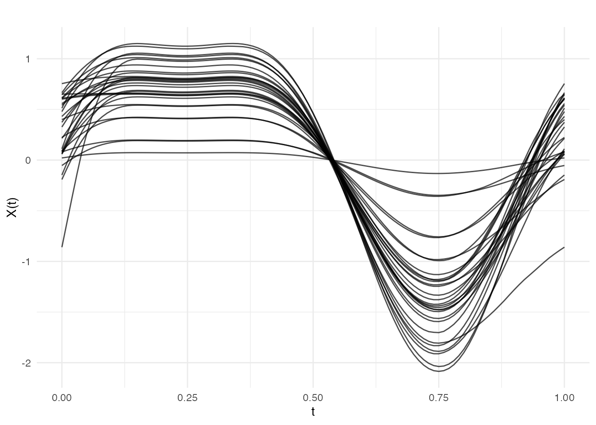
plot(karcher$gammas, main = "Warping Functions (Phase Information)",
xlab = "t", ylab = expression(gamma(t)))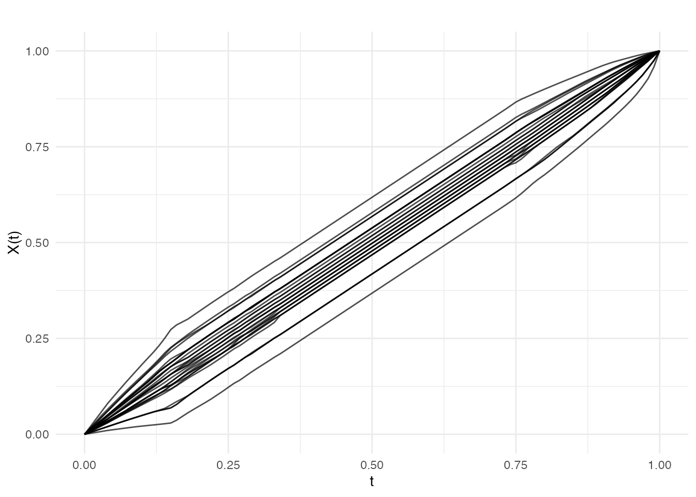
Vertical FPCA: Amplitude Variability
Vertical FPCA performs PCA on the aligned curves, capturing pure shape variation:
vert_result <- vert.fpca(karcher, ncomp = 3)
cat("Vertical FPCA - cumulative variance:\n")
#> Vertical FPCA - cumulative variance:
print(round(vert_result$cumulative.variance, 4))
#> [1] 0.7132 0.9950 1.0000
plot(vert_result, type = "scores")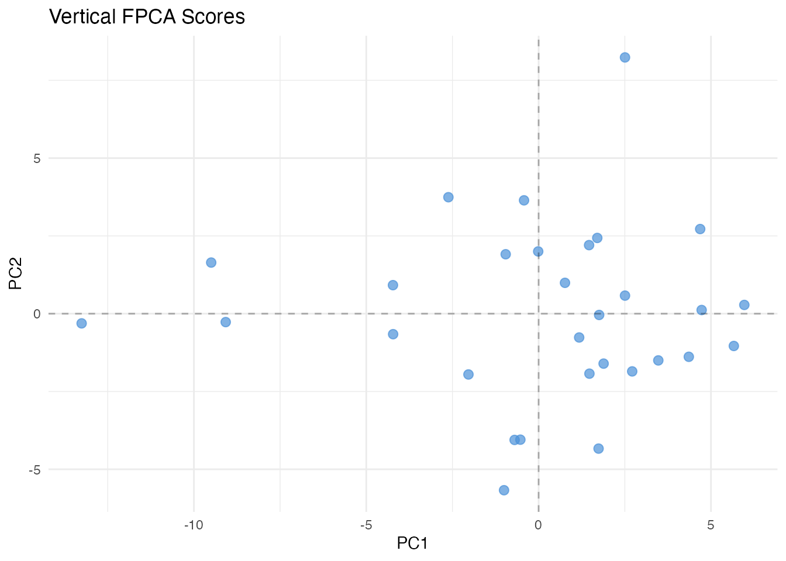
plot(vert_result, type = "eigenfunctions")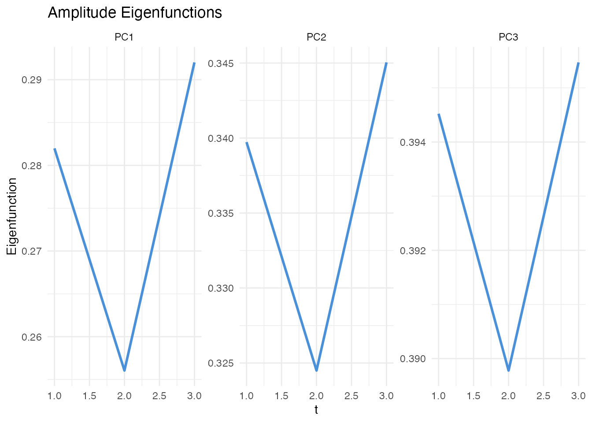
plot(vert_result, type = "variance")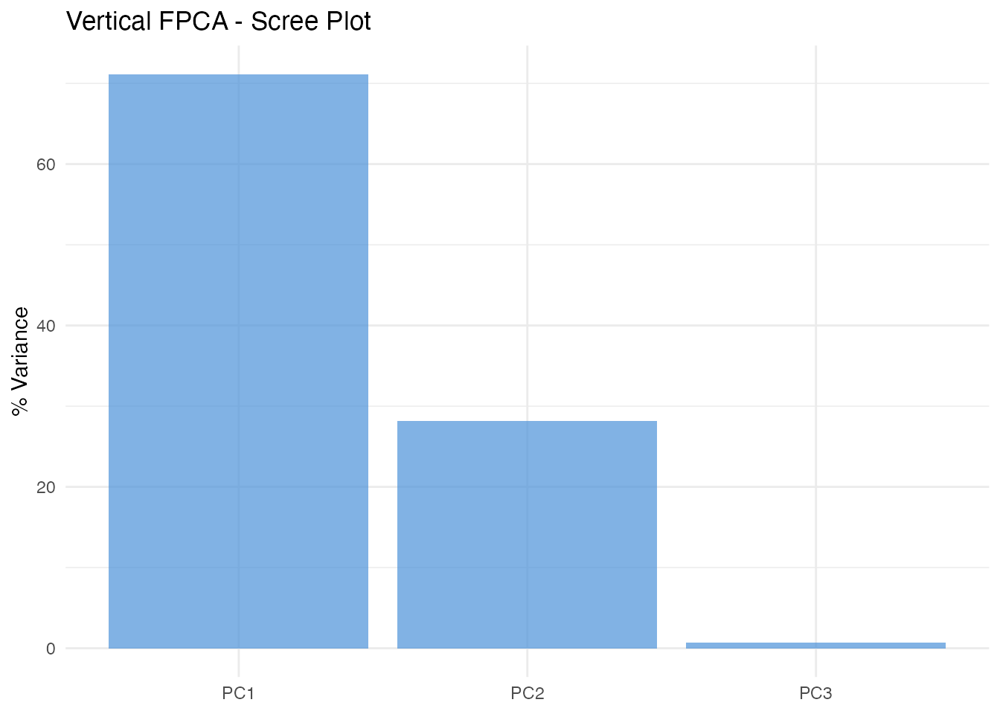
Horizontal FPCA: Phase Variability
Horizontal FPCA analyzes the warping functions, capturing pure timing variation:
horiz_result <- horiz.fpca(karcher, ncomp = 3)
cat("Horizontal FPCA - cumulative variance:\n")
#> Horizontal FPCA - cumulative variance:
print(round(horiz_result$cumulative.variance, 4))
#> [1] 0.9533 0.9817 1.0000
plot(horiz_result, type = "scores")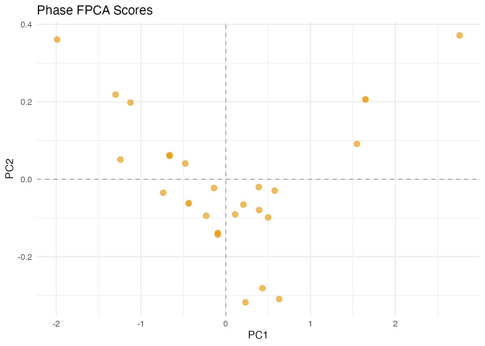
plot(horiz_result, type = "warps")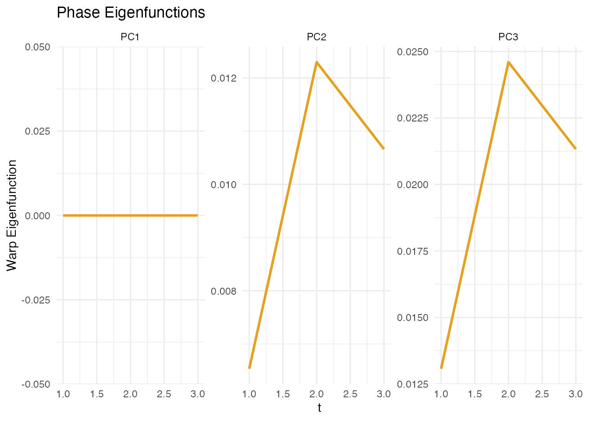
Joint FPCA: Combined Analysis
Joint FPCA simultaneously analyzes both amplitude and phase:
joint_result <- joint.fpca(karcher, ncomp = 3)
cat("Joint FPCA - cumulative variance:\n")
#> Joint FPCA - cumulative variance:
print(round(joint_result$cumulative.variance, 4))
#> [1] 0.7132 0.9950 1.0000
plot(joint_result, type = "scores")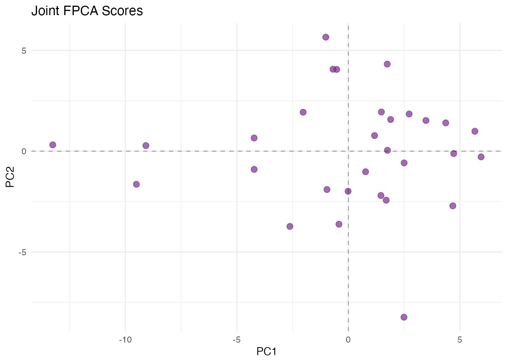
plot(joint_result, type = "balance")
#> Warning in vert_var + horiz_var: longer object length is not a multiple of
#> shorter object length
#> Warning in horiz_var/total: longer object length is not a multiple of shorter
#> object length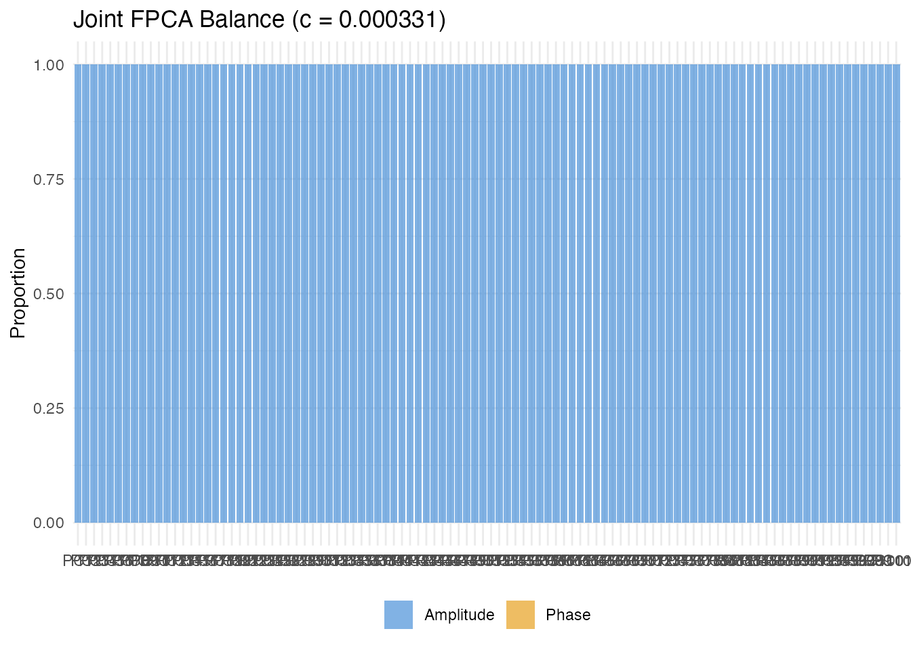
Practical Guidance
Use vertical (amplitude) FPCA when:
- You want to understand pure shape variation after removing timing differences
Use horizontal (phase) FPCA when:
- You want to understand timing or alignment variation
Use joint FPCA when:
- You want to simultaneously analyze amplitude and phase variation
- You need to understand their relative contributions
Example applications:
- Growth curves: Vertical for shape differences, horizontal for developmental timing
- Gait analysis: Vertical for movement patterns, horizontal for stride timing
- Weather: Vertical for seasonal temperature patterns, horizontal for seasonal shift
References
Srivastava, A., Wu, W., Kurtek, S., Klassen, E. and Marron, J.S. (2011). Registration of functional data using the Fisher-Rao metric. arXiv preprint arXiv:1103.3817.
Tucker, J.D., Wu, W. and Srivastava, A. (2013). Generative models for functional data using phase and amplitude separation. Computational Statistics & Data Analysis, 61, 50–66.
Srivastava, A. and Klassen, E.P. (2016). Functional and Shape Data Analysis. Springer.
Ramsay, J.O. and Silverman, B.W. (2005). Functional Data Analysis. 2nd ed. Springer.